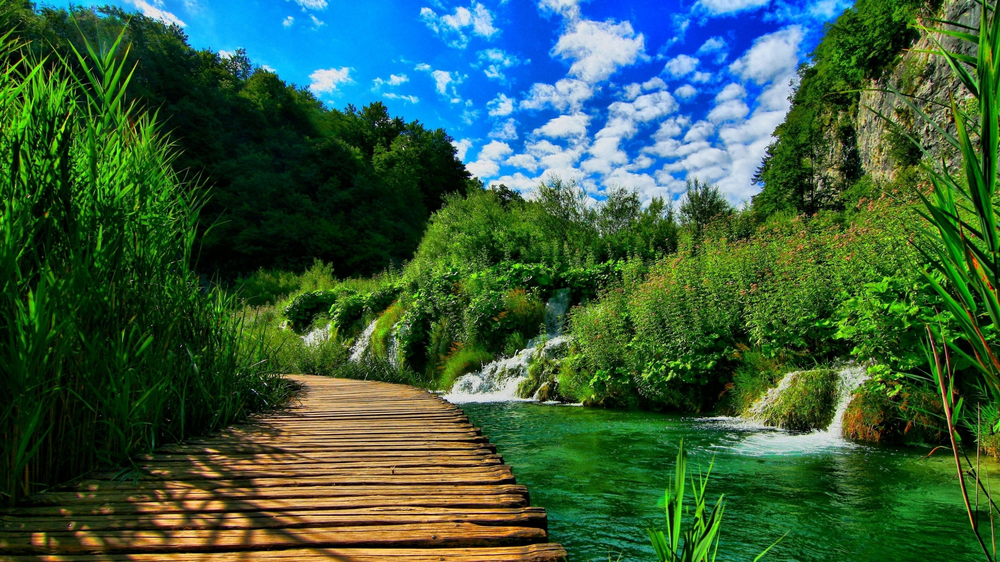

X
<
>

<
>

«Türkmenistanyň Prezidentiniň obalaryň, şäherçeleriň, etraplardaky şäherleriň we etrap merkezleriniň
ilatynyň ýaşaýyş-durmuş şertlerini özgertmek boýunça 2028-nji ýyla çenli döwür üçin Milli
Maksatnamasyna» laýyklykda Lebap welaýaty boýunça 2023-nji ýylda ýerine ýetirilen gurluşyklar barada
jikme-jik
MAGLUMAT
01.04.2023ý
| T/b | Buýrujy, potratçy | Etraby we salgysy | Meýilnama | 2023-nji ýylda gurulmaly sany: | 2023-nji ýylda maýa goýum mln.manatda | Gurluşygyň ýagdaýy | |||
|---|---|---|---|---|---|---|---|---|---|
| Tamamlanan | Dowam edýär | Başlanmadyk | Meýilnama | Özleşdirleni | |||||
| Durmuş-medeni maksatly binalar we desgalar: | |||||||||
| Durmuş-medeni maksatly binalar we desgalar: | 3,00 | 0,00 | 3,00 | 0,00 | 52,28 | 0,00 | |||
| 1 | Lebap welaýat häkimligi,«Bäş ýol» hususy kärhanasy | Dänew etrabynyň Dänew şäherindäki 154 orunlyk hassahananyň durkuny täzelemek | 1 | - | 1 | - | 18,01 | - | Dowam edýär Hassahana 2018-nji ýylda başlanyp, 57% gurluşyk işleri ýerine ýetirilip, lift enjamlaryny gurnama, timarlaýyş, kafel, lenolium, beton suwag, asma potologyň karkasyny dokamak işleri dowam edip, töleg resminamalary resmileşdirmek işleri alnyp barylýar. |
| Saýat etrabynyň Saýat şäherindäki 150 orunlyk hassahananyň durkuny täzelemek | 1 | - | 1 | - | 17,70 | - | Dowam edýär Hassahana 2015-nji ýylda başlanyp, 49% gurluşyk işleri ýerine ýetirilip, timarlaýyş, lenolium, kafel örtmek, elektrik, kerpiç örmek, howalandyrma, haýat işleri dowam edip, töleg resminamalary resmileşdirmek işleri alnyp barylýar. |
||
| Lebap welaýat häkimligi «Ark» hususy kärhanasy | Çärjew etrabynyň Zerger geňeşliginiň Gyzylýap obasynda 600 orunlyk orta mekdebiň gurluşygy | 1 | - | 1 | - | 16,57 | - | Dowam edýär Hassahana 2018-nji ýylda başlanyp, 25% gurluşyk işleri ýerine ýetirilip, binada parapeti we kerpiç örmek işleri dowam edip, töleg resminamalary resmileşdirmek işleri alnyp barylýar. | |
| Inženerçilik ulgamlary: | |||||||||
| Suw geçirijiler jemi km | 32,30 | 0,00 | 0,00 | 32,30 | 8,03 | 0,00 | |||
| Täze gurulýany km | 24,30 | 0,00 | 0,00 | 24,30 | 6,89 | 0,00 | |||
| Hereket edýäniniň durkuny täzelemek km | 8,00 | 0,00 | 0,00 | 8,00 | 1,14 | 0,00 | |||
| 2 | Lebap welaýat häkimligi | Türkmenabat şäheri şol sanda: | Başlanmadyk | ||||||
| Täze gurulýany | 2,80 | - | - | 2,80 | 0,79 | - | |||
| Hereket edýäniniň durkuny täzelemek | 5,00 | - | - | 5,00 | 0,72 | - | |||
| Dänew etraby | |||||||||
| Täze gurulýany | 2,00 | - | - | 2,00 | 0,57 | - | |||
| Hereket edýäniniň durkuny täzelemek | 1,50 | - | - | 1,50 | 0,21 | - | |||
| Çärjew etraby | |||||||||
| Täze gurulýany | 10,00 | - | - | 10,00 | 2,84 | - | |||
| Saýat etraby | |||||||||
| Täze gurulýany | 1,00 | - | - | 1,00 | 0,28 | - | |||
| Halaç etraby | |||||||||
| Täze gurulýany | 1,50 | - | - | 1,50 | 0,43 | - | |||
| Hojambaz etraby | |||||||||
| Täze gurulýany | 2,00 | - | - | 2,00 | 0,57 | - | |||
| Hereket edýäniniň durkuny täzelemek | 0,25 | - | - | 0,25 | 0,04 | - | |||
| Kerki etraby | |||||||||
| Täze gurulýany | 1,00 | - | - | 1,00 | 0,28 | - | |||
| Hereket edýäniniň durkuny täzelemek | 1,00 | - | - | 1,00 | 0,14 | - | |||
| Köýtendag etraby | |||||||||
| Täze gurulýany | 4,00 | - | - | 4,00 | 1,14 | - | |||
| Hereket edýäniniň durkuny täzelemek | 0,25 | - | - | 0,25 | 0,04 | - | |||
| Lagym geçirijiler jemi km | 6,70 | 0,00 | 0,00 | 6,70 | 2,63 | 0,00 | |||
| Täze gurulýany km | 5,50 | 0,00 | 0,00 | 5,50 | 2,37 | 0,00 | |||
| Hereket edýäniniň durkuny täzelemek km | 1,20 | 0,00 | 0,00 | 1,20 | 0,26 | 0,00 | |||
| 3 | Lebap welaýat häkimligi | Türkmenabat şäheri şol sanda: | - | - | - | - | - | - | Başlanmadyk |
| Täze gurulýany | 5,50 | 0,00 | 0,00 | 5,50 | 2,37 | 0,00 | |||
| Hereket edýäniniň durkuny täzelemek | 1,20 | 0,00 | 0,00 | 1,20 | 0,26 | 0,00 | |||
| Kerki etraby | - | - | - | - | - | - | |||
| Täze gurulýany | 1,50 | 0,00 | 0,00 | 1,50 | 0,65 | 0,00 | |||
| Awtomobil ýollar jemi km | 104,92 | 0,00 | 0,00 | 104,92 | 55,26 | 0,00 | |||
| Täze gurulýany km | 78,48 | 0,00 | 0,00 | 78,48 | 47,31 | 0,00 | |||
| Hereket edýäniniň durkuny täzelemek km | 26,44 | 0,00 | 0,00 | 26,44 | 7,95 | 0,00 | |||
| 4 | Lebap welaýat häkimligi Lebap ýol gurluşyk müdirligi Lebap awtomobil ýollary ulanyş müdirligi | Türkmenabat şäheri Täze gurulýany şol sanda: | 10,00 | 0,00 | 0,00 | 10,00 | 6,03 | 0,00 | Başlanmadyk |
| Bagtyýar nesil köçesiniň gurluşygy | 0,55 | - | - | 0,55 | 0,33 | - | Başlanmadyk | ||
| Diwanabag köçesiniň gurluşygy | 0,40 | - | - | 0,40 | 0,24 | - | |||
| Azatlyk köçesinden Amul posýologynyň çäginde gurulýan ýaşaýyş jaýlar toplumynyň arasyndan geçýän ýoluň gurluşygy | 1,00 | - | - | 1,00 | 0,60 | - | |||
| Talhanbazar obasyndan Azatlyk köçesine çenli ýoluň gurluşygy | 0,70 | - | - | 0,70 | 0,42 | - | |||
| Azatlyk şäherçesi Aýna köçesiniň gurluşygy | 1,09 | - | - | 1,09 | 0,66 | - | |||
| Gökdepe köçesiniň gurluşygy | 0,50 | - | - | 0,50 | 0,30 | - | |||
| Ýokary Kerki ýazlak massiwiniň esasy ýolyň gurluşygy | 2,60 | - | - | 2,60 | 1,57 | - | |||
| Ýaşlyk posýolygynyň Gowurdak köçesiniň gurluşygy | 0,26 | - | - | 0,26 | 0,16 | - | |||
| Berzeňkanal ertapçasynda Ýüpek ýol köçesinden aýlaw ýola çenli ýoluň gurluşygy | 1,20 | - | - | 1,20 | 0,72 | - | |||
| Azatlyk şäherçesiniň Ýyldyzly köçesiniň gurluşygy | 0,90 | - | - | 0,90 | 0,55 | - | |||
| Garajaköl obasynyň E.Geldiýew köçesiniň gurluşygy | 0,50 | - | - | 0,50 | 0,30 | - | |||
| R.Babakulyýew köçesiniň gurluşygy | 0,30 | - | - | 0,30 | 0,18 | - | |||
| Hereket edýäniniň durkuny täzelemek | 2,91 | 0,00 | 0,00 | 2,91 | 0,88 | 0,00 | Başlanmadyk | ||
| Asudalyk köçesiniň ugrunda gurulýan ýaşaýyş jaýlar toplumynyň arasyndan geçýän ýoluň Mollanepes köçesine çenli durkuny täzelemek | 0,30 | - | - | 0,30 | 0,09 | - | Başlanmadyk | ||
| Togrul beg köçesiniň gurluşygy | 0,13 | - | - | 0,13 | 0,04 | - | |||
| Aşgabat köçesini Zelili köçesinden Garabekewül köçesine çenli durkuny täzelemek | 0,27 | - | - | 0,27 | 0,08 | - | |||
| Aýşugla köçesiniň (tupik) köçesiniň durkuny täzelemek | 0,53 | - | - | 0,53 | 0,16 | - | |||
| Medeniýet köçesiniň durkuny täzelemek | 0,13 | - | - | 0,13 | 0,04 | - | |||
| A.Bekmuradow köçesiniň durkuny täzelemek | 0,38 | - | - | 0,38 | 0,12 | - | |||
| A.Abdyrahmanow köçesiniň durkuny täzelelemek | 0,69 | - | - | 0,69 | 0,21 | - | |||
| Babagambar köçesiniň durkuny täzelelemek | 0,18 | - | - | 0,18 | 0,05 | - | |||
| Akdepe köçesini M.Ruhnama köçesine çenli aralygynyň durkuny täzelemek | 0,30 | - | - | 0,30 | 0,09 | - | |||
| Darganata etraby Täze gurulýany | 1,23 | 0,00 | 0,00 | 1,23 | 0,74 | 0,00 | Başlanmadyk | ||
| “Türkmenabat-Gazojak” ýolundan Çarwadar geňeşligine barýan ýolunyň gurluşygy | 1,23 | - | - | 1,23 | 0,74 | - | Başlanmadyk | ||
| Darganata etraby Täze gurulýany | 10,90 | 0,00 | 0,00 | 10,90 | 6,57 | 0,00 | Başlanmadyk | ||
| Galkynyş we Bahar şähere geňeşlikleri üçin täze döredilen mellek ýer gaznasyna baraýan ýoluň gurluşygy | 4,50 | - | - | 4,50 | 2,71 | - | Başlanmadyk | ||
| Boýnyuzyn geňeşliginiň Gaýrat köçesiniň gurluşygy | 0,40 | - | - | 0,40 | 0,24 | - | |||
| Azatlyk geňeşliginiň Ata obasynyň Kemine gurluşygy | 0,26 | - | - | 0,26 | 0,16 | - | |||
| Ödeý geňeşliginiň Ak-Altyn obasynyň Ak Altyn köçesiniň gurluşygy | 0,95 | - | - | 0,95 | 0,57 | - | |||
| Baragyz geňeşliginiň Baragyz obasynda döredilen täze mellek ýer gaznasyna barýan ýoluň gurluşygy | 1,80 | - | - | 1,80 | 1,08 | - | |||
| Ödeý geňeşliginiň täze mellek ýer gaznasyna barýan ýoluň gurluşygy | 3,00 | - | - | 3,00 | 1,81 | - | |||
| Hereket edýäniniň durkuny täzelemek | 8,00 | 0,00 | 0,00 | 8,00 | 2,41 | 0,00 | Başlanmadyk | ||
| Täze guruljak seýilgähe barýan ýoluň durkuny täzelemek | 0,50 | - | - | 0,50 | 0,15 | - | Başlanmadyk | ||
| Göýnük geňeşliginiň Göýnük oba Pyragy we Şenbe bazar obasynyň B.Şamyradow köçesiniň durkuny täzelemek | 0,50 | - | - | 0,50 | 0,15 | - | |||
| Baragyz geňeşliginiň Baragyz obasynyň saglyk öýüne barýan ýoluň durkuny täzelemek | 1,50 | - | - | 1,50 | 0,45 | - | |||
| Seýdi şäheriniň Arzuw şäherçesiniň täze mellek ýer gaznasyna barýan ýoluň durkuny täzelemek | 0,60 | - | - | 0,60 | 0,18 | - | |||
| Seýdi şäheriniň Aşgabat köçesiniň durkuny täzelemek | 0,43 | - | - | 0,43 | 0,13 | - | |||
| Boýnyuzyn geňeşliginiň Durmuşly obasynyň Kemine köçesiniň durkuny täzelemek | 0,36 | - | - | 0,36 | 0,11 | - | |||
| Ýyldyz geňeşliginiň Sazakly obasynyň Demirýol köçesiniň durkuny täzelemek | 0,60 | - | - | 0,60 | 0,18 | - | |||
| Döwletabat geňeşliginiň Watan obasynyň 7-nji orta mekdebine barýan ýolunyň durkuny täzelemek | 0,65 | - | - | 0,65 | 0,20 | - | |||
| Dänew şäheriniň Nowruz köçesiniň durkuny täzelemek | 0,80 | - | - | 0,80 | 0,24 | - | |||
| Nyýazow şäherçesiniň Arak ýap köçesiniň durkuny täzelemek | 0,60 | - | - | 0,60 | 0,18 | - | |||
| Boýnyuzyn geňeşliginiň Durmuşly obasynyň Demirgazyk, Aşgabat, Raýdaşlyk köçeleriniň durkuny täzelemek | 0,66 | - | - | 0,66 | 0,20 | - | |||
| Asuda şäherçesiniň Medeniýet köçesiniň durkuny täzelemek | 0,30 | - | - | 0,30 | 0,09 | - | |||
| Baragyz geňeşliginiň Ärsary obasynyň Lebap köçesiniň durkuny täzelemek | 0,50 | - | - | 0,50 | 0,15 | - | |||
| Çärjew etraby Täze gurulýany | 7,60 | 0,00 | 0,00 | 7,60 | 4,58 | 0,00 | Başlanmadyk | ||
| N.Gutlyýew geňeşliginiň Ýaşlar obasynyň Agzybirlik köçesiniň gurluşygy | 0,65 | - | - | 0,65 | 0,39 | - | Başlanmadyk | ||
| Farap şäheriniň K.Andalyp köçesiniň gurluşygy | 0,50 | - | - | 0,50 | 0,30 | - | |||
| Eljik obasynyň çäginde täze döredilen mellek ýer gaznasyna barýan ýoluň gurluşygy | 0,18 | - | - | 0,18 | 0,11 | - | |||
| Farap şäherçesiniň çäginde täze döredilen mellek ýer gaznasyna barýan ýoluň gurluşygy | 0,95 | - | - | 0,95 | 0,57 | - | |||
| N.Gutlyýew geňeşliginiň Ýaşlar obasynyň Asudalyk köçesiniň gurluşygy | 0,33 | - | - | 0,33 | 0,20 | - | |||
| Jeýhun şäherçesiniň Täze köçesiniň, Farap şäherçesinde G.Atabaýew köçesiniň gurluşygy | 0,76 | - | - | 0,76 | 0,46 | - | |||
| Zerger geňeşliginiň Gyzylýap oobasyndaky 600 orunlyk orta mekdebine barýan ýoluň gurluşygy | 1,00 | - | - | 1,00 | 0,60 | - | |||
| Amyderýa geňeşliginiň Täze gum obasyndan Dänew etrabynyň täze mellek ýerlerine çenli ýoluň gurluşygy | 1,86 | - | - | 1,86 | 1,12 | - | |||
| Amyderýa geňeşliginiň Zarpçy obasynyň Güneş köçesiniň gurluşygy | 0,40 | - | - | 0,40 | 0,24 | - | |||
| N.Gutlyýew adyndaky geňeşliginiň Saýatly obasyna barylýan ýoluň gurluşygy | 0,50 | - | - | 0,50 | 0,30 | - | |||
| Zerger geňeşliginiň Düýeçi obasynyň Bäşimow köçesiniň gurluşygy | 0,48 | - | - | 0,48 | 0,29 | - | |||
| Hereket edýäniniň durkuny täzelemek | 5,50 | 0,00 | 0,00 | 5,50 | 1,66 | 0,00 | Başlanmadyk | ||
| Gularyk geňeşliginiň Balykçy obasynyň Şatlyk, Kese köçeleriniň durkuny täzelemek | 0,95 | - | - | 0,95 | 0,29 | - | Başlanmadyk | ||
| Parahat daýhan birleşiginiň Amyderýa geňeşliginiň Şatlyk, kese köçe köçeleriniň durkuny täzelemek | 1,00 | - | - | 1,00 | 0,30 | - | |||
| Kölaryk geňeşliginiň Asudalyk obasynyň I.Haýydow köçesiniň durkuny täzelemek | 0,42 | - | - | 0,42 | 0,13 | - | |||
| Kölaryk geňeşliginiň Araplar obasynyň Amyderýa, Merkez köçeleriniň durkuny täzelemek | 1,00 | - | - | 1,00 | 0,30 | - | |||
| Boýrobap geňeşliginiň Tally obasynyň Zelili köçesiniň dowamynyň durkuny täzelemek | 0,16 | - | - | 0,16 | 0,05 | - | |||
| “Türkmenabat-Mary” awtomobil ýolundan täze döredilen mellek ýer gaznalaryna barýan ýoluň durkuny täzelemek | 0,98 | - | - | 0,98 | 0,29 | - | |||
| Kyraç geňeşliginiň 12-nji orta mekdebine barýan Seýitnazar Seýdi köçesiniň durkuny täzelemek | 0,50 | - | - | 0,50 | 0,15 | - | |||
| Bereket geňeşliginiň Ýaşlyk obasynyň Bedew köçesine barýan we Bedew köçesiniň durkuny täzelemek | 0,50 | - | - | 0,50 | 0,15 | - | |||
| Saýat etraby Täze gurulýany | 6,71 | 0,00 | 0,00 | 6,71 | 4,05 | 0,00 | Başlanmadyk | ||
| Bitaraplyk obasynyň çäginde täze döredilen mellek ýer gaznasyna barýan ýoluň gurluşygy | 1,10 | - | - | 1,10 | 0,67 | - | Başlanmadyk | ||
| Mülk obasynyň çäginde täze döredilen mellek ýer gaznasyna barýan ýoluň gurluşygy | 1,60 | - | - | 1,60 | 0,97 | - | |||
| Çarbagdepe geňeşliginiň Miweçiler obasynyň Türkmenbaşy köçesiniň gurluşygy | 1,00 | - | - | 1,00 | 0,60 | - | |||
| Sakar şäheriniň döredilen täze mellek ýer gaznasyna barýan ýoluň gurluşygy | 1,60 | - | - | 1,60 | 0,96 | - | |||
| Rahmançäge geňeşliginiň içinden geçýän “Türkmenabat-Kerki” awtomobil ýolundan, geňeşligiň mellek ýer gaznasyna barýan ýol | 1,41 | - | - | 1,41 | 0,85 | - | |||
| Hereket edýäniniň durkuny täzelemek | 1,77 | 0,00 | 0,00 | 1,77 | 0,53 | 0,00 | Başlanmadyk | ||
| Suwçyoba şäherçe geňeşliginiň Abadançylyk köçesiniň durkuny täzelemek. | 0,70 | - | - | 0,70 | 0,21 | - | Başlanmadyk | ||
| Merýe geňeşliginiň Alpan obasynyň Aşgabat köçesiniň durkuny täzelemek (400 orunlyk orta mekdebe barýan ýol) | 0,63 | - | - | 0,63 | 0,19 | - | |||
| Saýat etrabynyň Saýat şäherçesinň çäginde täze döredilen mellek ýer gaznasyna barýan ýoluň durkuny täzelemek | 0,44 | - | - | 0,44 | 0,13 | - | |||
| Saýat etraby Täze gurulýany | 10,00 | 0,00 | 0,00 | 10,00 | 6,03 | 0,00 | Başlanmadyk | ||
| Surh we güneşlik geňeşlikleriniň çäginde täze döredilen mellek ýer gaznasyna barýan ýoluň gurluşygy | 1,07 | - | - | 1,07 | 0,65 | - | Başlanmadyk | ||
| Güýçbireşik geňeşliginde Täze döredilen mellek ýer gaznasyna barýan ýoluň gurluşygy | 0,06 | - | - | 0,06 | 0,04 | - | |||
| Esenmeňli geňeşliginiň Akýap obasynda 500 orunlyk orta mekdebe barýan ýoluň gurluşygy | 0,15 | - | - | 0,15 | 0,09 | - | |||
| Halaç geňeşliginiň Babadaýhan obasynyň Pagtaçy, Azady köçeleriniň gurluşygy | 1,48 | - | - | 1,48 | 0,89 | - | |||
| Surh geňeşliginiň Sahra köçesiniň gurluşygy | 0,35 | - | - | 0,35 | 0,21 | - | |||
| Oguzhan geňeşliginiň Etbaş obasynyň Türkmenistan köçesiniň gurluşygy | 0,65 | - | - | 0,65 | 0,39 | - | |||
| Oguzhan geňeşliginiň Mangyşlaly obasynyň A.Allakulyýew köçesiniň gurluşygy | 0,57 | - | - | 0,57 | 0,35 | - | |||
| Pelwert geňeşliginiň Pelwert obasynyň Görelde köçesiniň gurluşygy | 1,20 | - | - | 1,20 | 0,72 | - | |||
| Esenmeňli geňeşliginiň Akýap obasynyň Garagum köçesiniň gurluşygy | 1,20 | - | - | 1,20 | 0,72 | - | |||
| Güneşlik geňeşliginiň Güneşlik obasynyň Arkadag köçesiniň gurluşygy | 1,20 | - | - | 1,20 | 0,72 | - | |||
| Altyn asyr geňeşliginiň Baýhalky obasynyň Täze ýurt köçesiniň gurluşygy | 0,85 | - | - | 0,85 | 0,53 | - | |||
| Halaç geňeşliginiň Azady we Garagaç obalarynyň aralaryndaky Watan köçesiniň gurluşygy | 1,20 | - | - | 1,20 | 0,72 | - | |||
| Hereket edýäniniň durkuny täzelemek | 3,00 | 0,00 | 0,00 | 3,00 | 0,90 | 0,00 | Başlanmadyk | ||
| Pelwert geňeşliginiň Pelwert obasynyň O.Jumaýew, Pelwert köçeleriniň durk täzelemek. | 0,90 | - | - | 0,90 | 0,27 | - | Başlanmadyk | ||
| Halaç geňeşliginiň Ajy obasynyň Abadançylyk köçesiniöň durkuny täzelemek | 0,75 | - | - | 0,75 | 0,22 | - | |||
| Täze döwrebap şäherçesine barýan ýoluň durkuny täzelemek | 1,35 | - | - | 1,35 | 0,41 | - | |||
| Hojambaz etraby Täze gurulýany | 6,25 | 0,00 | 0,00 | 6,25 | 3,77 | 0,00 | Başlanmadyk | ||
| Beşir geňeşliginiň Ýokary şor obasynyň çäginde täze mellek ýer gaznasyna barýan ýoluň gurluşygy | 1,10 | - | - | 1,10 | 0,66 | - | Başlanmadyk | ||
| Surhy geňeşliginiň ilaty üçin döredilen täze mellek ýer gaznasyna barýan ýoluň gurluşygy | 0,25 | - | - | 0,25 | 0,15 | - | |||
| Hojambaz şäherçesiniň ilaty üçin döredilen täze mellek ýer gaznasyna barýan ýoluň gurluşygy | 1,90 | - | - | 1,90 | 1,15 | - | |||
| Beşir geňeşliginiň ilaty üçin döredilen täze mellek ýer gaznasyna barýan ýoluň gurluşygy | 3,00 | - | - | 3,00 | 1,81 | - | |||
| Hereket edýäniniň durkuny täzelemek | 2,48 | 0,00 | 0,00 | 2,48 | 0,75 | 0,00 | Başlanmadyk | ||
| Hojambaz geňeşliginiň S.Nyýazow köçeiniň durkuny täzelemek | 2,48 | - | - | 2,48 | 0,75 | - | Başlanmadyk | ||
| Kerki etraby Täze gurulýany | 2,04 | 0,00 | 0,00 | 2,04 | 1,23 | 0,00 | Başlanmadyk | ||
| Gowak obasyndan täze mellek ýerlerine çenli barýan ýoluň gurluşygy | 1,04 | - | - | 1,04 | 0,63 | - | Başlanmadyk | ||
| Astanababa geňeşliginiň Astanababa obasynda Türkmenabat-Atamyrat gara ýolundan Türkmenistan köçesine çenli ýoluň gurluşygy | 0,25 | - | - | 0,25 | 0,15 | - | |||
| Gowak geňeşliginiň Gowak obasynda 160 orunlyk çagalar bagyna barýan ýoluň gurluşygy | 0,75 | - | - | 0,75 | 0,45 | - | |||
| Hereket edýäniniň durkuny täzelemek | 1,30 | 0,00 | 0,00 | 1,30 | 0,39 | 0,00 | Başlanmadyk | ||
| “Kerki-Yamamnazar” gümrükhanasyna barýan ýolunyň durkuny täzelemek | 1,12 | - | - | 1,12 | 0,34 | - | Başlanmadyk | ||
| Astanababa geňeşliginiň Astanababa obasynyň Kemine köçesiniň durkuny täzelemek | 0,18 | - | - | 0,18 | 0,05 | - | |||
| Köýtendag etraby Täze gurulýany | 23,75 | 0,00 | 0,00 | 23,75 | 14,31 | 0,00 | Başlanmadyk | ||
| Demir ýol menzilinden Obahyzmat kärhanasyna barýan ýoluň gurluşygy | 1,95 | - | - | 1,95 | 1,18 | - | Başlanmadyk | ||
| Akgumolam geňeşliginiň Bahar, Nesimi köçeleriniň gurluşygy | 1,50 | - | - | 1,50 | 0,90 | - | |||
| Ters geňeşliginiň Ters obasynyň Altyn Asyr we Utanow köçeleriniň gurluşygy | 0,95 | - | - | 0,95 | 0,57 | - | |||
| Köýtendag etrap häkimliginden Köýtendag etrabynyň Arçynlyk edara binasyna barýan ýoluň gurluşygy | 0,34 | - | - | 0,34 | 0,21 | - | |||
| Mukry şäherinde Allamyradow köçesiniň gurluşygy | 3,05 | - | - | 3,05 | 1,84 | - | |||
| Megejik obasynyň çäginde täze döredilen mellek ýer gaznasyna barýan ýoluň gurluşygy | 1,85 | - | - | 1,85 | 1,12 | - | |||
| Megejik geňeşliginiň Megejik obasynda 790 orunlyk orta mekdebe barýan ýoluň gurluşygy | 0,73 | - | - | 0,73 | 0,44 | - | |||
| Köýtendag şäherindäki 790 orunlyk orta mekdebe barýan ýoluň gurluşygy | 0,35 | - | - | 0,35 | 0,21 | - | |||
| Burguçy geňeşliginiň Daýhan obasynda 210 orunlyk mekdebe barýan ýoluň gurluşygy | 0,50 | - | - | 0,50 | 0,30 | - | |||
| Dostluk şäheriniň Kemine köçesiniň gurluşygy | 1,20 | - | - | 1,20 | 0,72 | - | |||
| Magdanly şäheriniň Hojangir obasyndaky täze mellek ýer gaznasyna barýan ýolyň gurluşygy | 3,48 | - | - | 3,48 | 2,10 | - | |||
| Garnas geňeşliginiň Balh obasyndaky täze mellek ýer gaznasyna barýan ýoluň gurluşygy | 1,30 | - | - | 1,30 | 0,78 | - | |||
| Ters geňeşliginiň Ters obasyndaky täze mellek ýer gaznasyna barýan ýoluň gurluşygy | 1,00 | - | - | 1,00 | 0,60 | - | |||
| Megejik geňeşliginiň Şagundy obasyndaky täze mellek ýer gaznasyna barýan ýoluň gurluşygy | 1,80 | - | - | 1,80 | 1,08 | - | |||
| Mukry şäherçesiniň täze mellek ýer gaznasyna barýan ýoluň gurluşygy (Alasygyr oba) | 2,05 | - | - | 2,05 | 1,24 | - | |||
| Zarpçy geňeşliginiň Zarpçy obasyndaky täze mellek ýer gaznasyna barýan ýoluň gurluşygy | 0,50 | - | - | 0,50 | 0,30 | - | |||
| Magdanly şäheriniň 28-nji çagalar bagyna barýan ýoluň gurluşygy | 1,20 | - | - | 1,20 | 0,72 | - | |||
| Hereket edýäniniň durkuny täzelemek | 1,48 | 0,00 | 0,00 | 1,48 | 0,45 | 0,00 | Başlanmadyk | ||
| Demir ýol geçelgesinden kiçi bazara barýan ýoluň durkuny täzelemek | 1,48 | - | - | 1,48 | 0,45 | - | Başlanmadyk | ||
| Elektrik geçirijiler jemi km | 65,20 | 0,00 | 0,00 | 65,20 | 10,19 | 0,00 | |||
| Täze gurulýany km | 41,00 | 0,00 | 0,00 | 41,00 | 7,89 | 0,00 | |||
| Hereket edýäniniň durkuny täzelemek km | 24,20 | 0,00 | 0,00 | 24,20 | 2,30 | 0,00 | |||
| 5 | Lebap welaýat häkimligi | Türkmenabat şäheri şol sanda: | - | - | - | Başlanmadyk | |||
| Täze gurulýany | 3,00 | - | - | 3,00 | 0,58 | - | |||
| Hereket edýäniniň durkuny täzelemek | 1,20 | - | - | 1,20 | 0,11 | - | |||
| Darganata etraby | - | - | - | ||||||
| Täze gurulýany | 3,00 | - | - | 3,00 | 0,58 | - | |||
| Dänew etraby | - | - | - | ||||||
| Täze gurulýany | 8,00 | - | - | 8,00 | 1,54 | - | |||
| Hereket edýäniniň durkuny täzelemek | 4,00 | - | - | 4,00 | 0,38 | - | |||
| Çärjew etraby | - | - | - | ||||||
| Täze gurulýany | 3,50 | - | - | 3,50 | 0,67 | - | |||
| Hereket edýäniniň durkuny täzelemek | 5,70 | - | - | 5,70 | 0,54 | - | |||
| Saýat etraby | - | - | - | ||||||
| Täze gurulýany | 1,50 | - | - | 1,50 | 0,29 | - | |||
| Hereket edýäniniň durkuny täzelemek | 1,00 | - | - | 1,00 | 0,10 | - | |||
| Halaç etraby | - | - | - | ||||||
| Täze gurulýany | 3,00 | - | - | 3,00 | 0,58 | - | |||
| Hereket edýäniniň durkuny täzelemek | 1,50 | - | - | 1,50 | 0,14 | - | |||
| Hojambaz etraby | - | - | - | ||||||
| Täze gurulýany | 3,50 | - | - | 3,50 | 0,67 | - | |||
| Hereket edýäniniň durkuny täzelemek | 1,75 | - | - | 1,75 | 0,17 | - | |||
| Kerki etraby | - | - | - | ||||||
| Täze gurulýany | 7,50 | - | - | 7,50 | 1,44 | - | |||
| Hereket edýäniniň durkuny täzelemek | 6,00 | - | - | 6,00 | 0,57 | - | |||
| Köýtendag etraby | - | - | - | ||||||
| Täze gurulýany | 8,00 | - | - | 8,00 | 1,54 | - | |||
| Hereket edýäniniň durkuny täzelemek | 3,05 | - | - | 3,05 | 0,29 | - | |||
| Gaz geçirijiler jemi km | 35,94 | 4,27 | 2,60 | 28,83 | 7,50 | 3,59 | |||
| Täze gurulýany km | 35,94 | 4,27 | 2,60 | 28,83 | 7,50 | 3,59 | |||
| 6 | «Türkmengazüpjünçilik« birleşiginiň gurluşuk gurnama müdirliginiň Lebap ülüşi «Türkmengündogarnebitgurluşyk« tresti Seýdiniň nebiti gaýtadan işleýän zawodynyň nebit zawot gurnama kärhanasy | Türkmenabat şäheri şol sanda: | 3,98 | 0,00 | 0,00 | 3,98 | 0,79 | 0,00 | |
| Türkmenabat şäheri Azatlyk şäherçesi | 1,85 | - | - | 1,85 | 0,44 | - | Başlanmadyk | ||
| Türkmenabat şäheri Azatlyk şäherçesiniň Altyn Döwür we Didar köçeleri | 2,13 | - | - | 2,13 | 0,35 | - | Başlanmadyk | ||
| Darganata etraby | 1,80 | 1,41 | 0,07 | 0,90 | 0,45 | 0,59 | |||
| Darganata etraby Lebap geňeşliginiň Täze ýer gaznasy | 0,30 | 0,88 | - | 0,09 | 0,43 | Tamamlanan 0,58 km meýilnamadan artyk ýerine ýetirilen | |||
| Darganata etraby Gazojak şäher geňeşliginiň Beregowaýa köçesi | 0,60 | - | - | 0,60 | 0,14 | - | Başlanmadyk | ||
| Darganata etraby Gazojak şäher geňeşliginiň Şiharyk obasynyň H.Kulyýew köçesi | 0,60 | 0,53 | 0,07 | - | 0,14 | 0,16 | Dowam edýär | ||
| Darganata etraby Lebap şäherçe geňeşliginiň Amyderýa köçesi | 0,30 | - | - | 0,30 | 0,07 | - | Başlanmadyk | ||
| Dänew etraby | 10,10 | 0,99 | - | 9,80 | 2,03 | 0,21 | |||
| Dänew etraby Seýdi şäheri geňeşliginiň 2-nji k/e-nyň Alp-Arslan köçesi | 0,65 | - | - | 0,65 | 0,15 | - | Başlanmadyk | ||
| Dänew etraby Seýdi şäheri geňeşliginiň 2-nji k/e-nyň Alp-Arslan köçesi | 0,40 | - | - | 0,40 | 0,07 | - | Başlanmadyk | ||
| Dänew etraby Bahar şäherçesi | 0,33 | - | - | 0,33 | 0,08 | - | Başlanmadyk | ||
| Dänew etraby Bahar şäherçesiniň Köl we Günbatar köçeleri | 0,45 | - | - | 0,45 | 0,07 | - | Başlanmadyk | ||
| Dänew etraby Maý geňeşliginiň Durýap obasy | 0,86 | - | - | 0,86 | 0,20 | - | Başlanmadyk | ||
| Dänew etraby Maý geňeşliginiň Durýap obasynyň Täze mellek köçesi | 1,35 | - | - | 1,35 | 0,22 | - | Başlanmadyk | ||
| Dänew etraby Parahat geňeşliginiň Gum obasy | 0,30 | 0,99 | - | - | 0,07 | 0,21 | Tamamlanan 0,69 km meýilnamadan artyk ýerine ýetirilen | ||
| Dänew etraby Parahat geňeşliginiň Gum obasynyň Seýdi köçesi | 0,60 | - | - | 0,60 | 0,10 | - | Başlanmadyk | ||
| Dänew etraby Döwletabat geňeşliginiň Adag obasy | 1,40 | - | - | 1,40 | 0,33 | - | Başlanmadyk | ||
| Dänew etraby Döwletabat geňeşliginiň Adag obasynyň Adag köçesi | 1,60 | - | - | 1,60 | 0,26 | - | Başlanmadyk | ||
| Dänew etraby Berzeň geňeşliginiň Kökçi obasy | 1,46 | - | - | 1,46 | 0,35 | - | Başlanmadyk | ||
| Dänew etraby Berzeň geňeşliginiň Kökçi obasynyň Kökçi köçesi | 0,70 | - | - | 0,70 | 0,12 | - | Başlanmadyk | ||
| Çärjew etraby | 7,26 | 1,43 | 0,47 | 5,66 | 1,51 | 0,16 | |||
| Çärjew etraby N.Gutlyýew geňeşliginiň Gum obasy | 0,90 | - | - | 0,90 | 0,21 | - | Başlanmadyk | ||
| Çärjew etraby N.Gutlyýew geňeşliginiň Gum obasy | 0,57 | - | - | 0,57 | 0,09 | - | Başlanmadyk | ||
| Çärjew etraby Hojaili geňeşliginiň Ýeňiş obasy | 0,90 | 0,80 | 0,10 | 0,21 | 0,01 | Dowam edýär | |||
| Çärjew etraby Hojaili geňeşliginiň Ýeňiş obasy | 0,57 | - | - | 0,57 | 0,09 | - | Başlanmadyk | ||
| Çärjew etraby Hojaili geňeşliginiň Dostluk obasy | 0,80 | - | - | 0,80 | 0,19 | - | Başlanmadyk | ||
| Çärjew etraby Hojaili geňeşliginiň Dostluk obasy | 0,57 | - | - | 0,57 | 0,09 | - | Başlanmadyk | ||
| Çärjew etraby Farap şäheriniň Ahal, Bekdaş, Akdepe, A.Kekilow, N.Saryhanow we M.Seýidow köçeleri | 0,10 | 0,40 | - | 0,02 | 0,09 | Tamamlanan 0,30 km meýilnamadan artyk ýerine ýetirilen | |||
| Çärjew etraby Jendi geňeşliginiň Ýalkym obasynyň Deňiz, Aşgabat, Zähmet we Garagum köçeleri | 0,14 | - | - | 0,14 | 0,02 | - | Başlanmadyk | ||
| Çärjew etraby Garamyş geňeşliginiň Älemdar we Bozaryk obalary | 0,60 | 0,23 | 0,37 | 0,14 | 0,04 | Dowam edýär | |||
| Çärjew etraby Garamyş geňeşliginiň Älemdar we Bozaryk obalarynyň Aşgabat we D.Ergeşow köçeleri | 0,39 | - | - | 0,39 | 0,06 | - | Başlanmadyk | ||
| Çärjew etraby Bitik geňeşliginiň Ýeketut obasy | 1,20 | - | - | 1,20 | 0,28 | - | Başlanmadyk | ||
| Çärjew etraby Bitik geňeşliginiň Ýeketut obasynyň Jebislik, Nusaý, Bähbit, Demirgazyk, Günorta we Gündogar köçeleri | 0,30 | - | - | 0,30 | 0,15 | - | Başlanmadyk | ||
| Çärjew etraby Hanoba geňeşliginiň Goýgala obasynyň Dostluk, 8-nji mart we S.Orunow köçeleri | 0,08 | - | - | 0,08 | 0,01 | 0,01 | Başlanmadyk | ||
| Çärjew etraby Kyraç geňeşliginiň Mergenli obasynyň Diýar, Galkynyş we Awaza köçeleri | 0,16 | - | - | 0,16 | 0,03 | - | Başlanmadyk | ||
| Saýat etraby | 2,8 | 0,65 | 0,85 | 1,25 | 0,63 | 0,13 | |||
| Saýat etraby Sakar şäheri | 1,50 | 0,65 | 0,85 | - | 0,36 | 0,13 | Dowam edýär | ||
| Saýat etraby Garamahmyt geňeşliginiň Täze oba obasy | 0,90 | - | - | 0,90 | 0,21 | - | Başlanmadyk | ||
| Saýat etraby Garamahmyt geňeşliginiň Täze oba obasynyň Garagum köçesi | 0,35 | - | - | 0,35 | 0,06 | - | Başlanmadyk | ||
| Halaç etraby | 3,80 | 1,59 | 0,20 | 2,50 | 0,78 | 0,53 | |||
| Halaç etraby Halaç şäheri (eltiji) | 0,20 | - | - | 0,20 | 0,05 | - | Başlanmadyk | ||
| Halaç etraby Halaç şäheriniň Hutar köçesi (içerki) | 0,20 | - | - | 0,20 | 0,03 | - | Başlanmadyk | ||
| Halaç etraby Esenmeňli geňeşliginiň Ak-ýap obasy (eltiji) | 0,90 | 0,70 | 0,20 | 0,21 | 0,11 | Dowam edýär | |||
| Halaç etraby Esenmeňli geňeşliginiň Ak-ýap obasynyň Çölden berlen mellek ýerler | 0,72 | - | - | 0,72 | 0,12 | - | Başlanmadyk | ||
| Halaç etraby Surh geňeşliginiň Çölden berlen mellek ýerler | 0,40 | - | - | 0,40 | 0,09 | - | Başlanmadyk | ||
| Halaç etraby Surh geňeşliginiň Çölden berlen mellek ýerler | 0,28 | - | - | 0,28 | 0,05 | - | Başlanmadyk | ||
| Halaç etraby Altyn-asyr geňeşliginiň Aryk aýak obasy | 0,30 | - | - | 0,30 | 0,07 | - | Başlanmadyk | ||
| Halaç etraby Altyn-asyr geňeşliginiň Aryk aýak obasynyň Çölden berlen mellek ýerler | 0,15 | - | - | 0,15 | 0,02 | - | Başlanmadyk | ||
| Halaç etraby Çöhpetde geňeşliginiň Çölden berlen mellek ýerler | 0,40 | 0,89 | - | - | 0,09 | 0,42 | Tamamlanan 0,49 km meýilnamadan artyk ýerine ýetirilen | ||
| Halaç etraby Çöhpetde geňeşliginiň Çölden berlen mellek ýerler | 0,25 | - | - | 0,25 | 0,04 | - | Başlanmadyk | ||
| Hojambaz etraby | 6,25 | 0,49 | 1,02 | 4,75 | 1,31 | 0,27 | |||
| Hojambaz etraby Hojambaz şäheri | 0,40 | - | - | 0,40 | 0,09 | - | Başlanmadyk | ||
| Hojambaz etraby Hojambaz şäheriniň Oguz-Han, Baýram-Han we Gorkut-Ata köçeleri | 0,50 | - | - | 0,50 | 0,08 | - | Başlanmadyk | ||
| Hojambaz etraby Hojahaýran geňeşliginiň Hojahaýran obasy | 1,50 | 0,49 | 1,02 | - | 0,36 | 0,23 | Dowam edýär | ||
| Hojambaz etraby Hojahaýran geňeşliginiň Hojahaýran obasynyň A.Abdyrasulow köçesi | 0,80 | - | - | 0,80 | 0,13 | - | Başlanmadyk | ||
| Köýtendag etraby Dostluk şäherçesiniň Gündogar köçesi (eltiji) | 1,00 | - | - | 1,00 | 0,24 | 0,04 | Başlanmadyk | ||
| Köýtendag etraby Dostluk şäherçesiniň Gündogar köçesi (içerki) | 0,55 | - | - | 0,55 | 0,09 | - | Başlanmadyk | ||
| Köýtendag etraby Burguçy geňeşliginiň Olam surhy obasy (eltiji) | 1,00 | - | - | 1,00 | 0,24 | - | Başlanmadyk | ||
| Köýtendag etraby Burguçy geňeşliginiň Olam surhy obasynyň Dagetek köçesi (içerki) | 0,50 | - | - | 0,50 | 0,08 | - | Başlanmadyk | ||
| Aragatnaşyk ulgamy jemi: | 2,58 | 5,53 | |||||||
| Telefon ulgamy km | 101,50 | 46,49 | 52,23 | 8,64 | 1,63 | 2,65 | |||
| Telefon belgileri sany | 3392 | 4160 | 0,00 | 0,00 | 0,95 | 2,88 | |||
| 7 | «Lebaptelekom« welaýat elektrik aragatnaşyk kärhanasy | Türkmenabat şäheri Telefon ulgamy | 10,40 | 5,01 | 5,39 | - | 0,27 | 0,43 | Dowam edýär |
| Telefon belgileri | 384 | 256 | 128,00 | - | 0,11 | 0,18 | Tamamlanan | ||
| Darganata etraby Telefon ulgamy | 9,60 | 3,70 | 5,90 | - | 0,14 | 0,24 | Dowam edýär | ||
| Telefon belgileri | 384 | 512 | 128,00 | - | 0,11 | 0,36 | Tamamlanan | ||
| Dänew etraby Telefon ulgamy | 15,40 | 15,80 | 0,40 | - | 0,23 | 0,88 | Tamamlanan | ||
| Telefon belgileri | 512 | 768 | 256,00 | - | 0,14 | 0,55 | Tamamlanan | ||
| Çärjew etraby Telefon ulgamy | 8,50 | 13,96 | 5,46 | - | 0,13 | 0,61 | Tamamlanan | ||
| Telefon belgileri | 192 | 1024 | 832,00 | - | 0,06 | 0,73 | Tamamlanan | ||
| Saýat etraby Telefon ulgamy | 21,12 | 3,95 | 17,18 | - | 0,30 | 0,14 | Dowam edýär | ||
| Telefon belgileri | 640 | 512 | 128,00 | - | 0,18 | 0,36 | Dowam edýär | ||
| Halaç etraby Telefon ulgamy | 7,68 | 0,48 | 7,20 | - | 0,13 | 0,08 | Dowam edýär | ||
| Telefon belgileri | 320 | 320 | 0,00 | - | 0,09 | 0,21 | Tamamlanan | ||
| Hojambaz etraby Telefon ulgamy | 8,64 | - | - | 8,64 | 0,13 | 0,01 | Başlanmadyk | ||
| Telefon belgileri | 320 | 64 | 256,00 | - | 0,08 | 0,03 | Dowam edýär | ||
| Kerki etraby Telefon ulgamy | 7,68 | 2,50 | 5,18 | - | 0,11 | 0,18 | Dowam edýär | ||
| Telefon belgileri | 256 | 256 | - | - | 0,07 | 0,18 | Tamamlanan | ||
| Köýtendag etraby Telefon ulgamy | 12,48 | 1,10 | 11,38 | - | 0,19 | 0,09 | Dowam edýär | ||
| Telefon belgileri | 384 | 448 | 64,00 | - | 0,11 | 0,27 | Tamamlanan | ||
| Ýaşaýyş jaýlary müň m² | 95,85 | 43,43 | |||||||
| hususy eýeçilikde müň m² sol sanda: | 93,50 | 24,38 | 69,12 | 0,00 | 95,85 | 43,43 | |||
| 8 | Lebap welaýat häkimligi | Türkmenabat şäheri | 30,00 | 12,27 | 17,73 | - | 30,75 | 18,45 | Tamamlanan |
| Darganata etraby | 6,50 | 0,87 | 5,63 | - | 6,66 | 0,89 | Dowam edýär | ||
| Dänew etraby | 8,50 | 1,05 | 7,45 | - | 8,71 | 2,37 | Dowam edýär | ||
| Çärjew etraby | 13,50 | 2,45 | 11,05 | - | 13,84 | 4,270 | Dowam edýär | ||
| Saýat etraby | 8,00 | 0,72 | 7,28 | - | 8,20 | 0,70 | Dowam edýär | ||
| Halaç etraby | 3,00 | 1,03 | 1,97 | - | 3,08 | 2,91 | Dowam edýär | ||
| Hojambaz etraby | 8,00 | 1,56 | 6,44 | - | 8,20 | 3,28 | Dowam edýär | ||
| Kerki etraby | 7,00 | 2,62 | 4,38 | - | 7,18 | 9,09 | Dowam edýär | ||
| Köýtendag etraby | 9,00 | 1,81 | 7,19 | - | 9,23 | 1,47 | Dowam edýär | ||
| Jemi özleşdirlen maýa goýum | 234,32 | 52,26 | |||||||